COMPUTATIONAL ORDINAL SOCIOMETRY AND SOCIO-THERMODYNAMIC DIAGNOSTICS (NEXORD PLATFORM)
Scientific Manifesto, Theoretical-Methodological Framework, and Institutional Governance Guidelines
«Hacia una Física de lo Grupal_JMC»
Canonical Certified Version v8.0 (2026)
Author: Dr. José Manuel Cornejo Álvarez
Academic Affiliation: Social Psychology. Faculty of Psychology, University of Barcelona (UB)
Role in the Initiative: Creator of the NEXORD Platform and Scientific Promotor of the Sociometric Data Bank (BSOC)
ORCID: 0000-0002-1234-5678
Concept DOI (Zenodo / CERN): 10.5281/zenodo.18926396
Homologated Edition DOI: 10.5281/zenodo.18941691
Official Web Platform & Interactive Ecosystem: https://josemancor.github.io/nex-ord-web/
Official Repository & Source Code: https://github.com/josemancor/nex-ord-web
Master Brand / Ecosystem: VISORD 3D/4D (Visual Ordinal Sociometry & Socio-Thermodynamic Diagnostics)
Platform Supported Languages: Spanish (ES), English (EN), French (FR), German (DE), Italian (IT), Portuguese (PT), Russian (RU), Chinese (ZH).
Executive Abstract
Scientific inquiry into human social networks and group dynamics has historically been constrained by two methodological limits: reliance on discrete binary nominations (choice/rejection) and dispositional models detached from interactive field dynamics. The NEXORD Platform formalizes a continuous, processual approach to group dynamics. This Manifesto establishes: (1) the contemporary realization of Jacob L. Moreno's and Kurt Lewin's foundational contributions through hierarchical rank quantification using the inverse rank function; (2) the fundamental axiom of GIVING and RECEIVING as an immanent and indissociable transactional loop; (3) continuous administration via the BREVE forced-drag format without ties, operationalized through the complementary matrix duality A(i, rank) and B(i, j), coupled with reflexive diagonal closure (IDA, ITA, ICE sensors); (4) the articulation of the Q81 tensorial lattice (9 × 9) structured within the 10-density socio-thermodynamic pentagram (10D plot), polarized across the macro-dimensions DA (emission) and RECIBE (reception); (5) the psychologization of relational field regimes, framing relational friction (Φ) as a necessary condition for adaptive viability against Groupthink risks, guiding intervention toward non-punitive unjamming or dignified ecosystemic relocation; (6) the versatility of the GxTyCz multidimensional design space, free from a priori constraints on analytical models; (7) the paradigmatic shift within dual factorial space (AFC ∥ PCA), transcending Moreno's and Benzécri's discrete categorical contingency (fixed $\mathbb{N}_0$ frequency tallies with tied quotas and $\chi^2$ peripheral distortion) through the socio-thermodynamic continuum of signed densities ($\pm\mathbb{R}$), where actors transition from static scalar points into dynamic dyadic dipoles ($DA \longrightarrow RC$), establishing $PC_1 \gg PC_2$ gravitational dominance, analytical barycentric conservation ($\Delta_{\text{centroid}} = 0.000$), and scale-invariant geodesic metrics on Grassmann manifolds $\operatorname{Gr}(k, N)$; (8) experimental extension to the monitoring of face-to-face interactions in physical laboratory settings and social dilemma dynamics; (9) multimodal diagnostics grounded in the iceberg model (rendering visible and audible surface and deep interactions via graphical solutions and hydrodynamic sonification); (10) CULTURAL Sociometry as a zero-reactivity benchmark; and (11) a governance framework governed by Ethics by Design, Open Science (FAIR Data), SHA3-512 cryptographic sealing (Clélie Protocol), and academic custodianship under the Sociometric Data Bank (BSOC / University of Barcelona).
Keywords: Computational Ordinal Sociometry, NEXORD Platform, VISORD Ecosystem, Sociometric Data Bank (BSOC), BREVE Format, Matrix Duality, Reflexive Diagonal Closure, 10D Pentagram, Relational Densities, Group Field Regimes, Relational Friction, Groupthink, Q81 Lattice, Dual Factorial Planes (AFC ∥ PCA), Dyadic Dipole, Barycentric Theorem, Grassmann Manifolds, GxTyCz Design Space, Physical Laboratory Monitoring, Graphical Solutions, Hydrodynamic Sonification, Iceberg Model, CULTURAL Sociometry, Clélie Protocol, Ethics by Design, Open Science.
1. Epistemological Foundations
1.1. Overcoming the Classical Limit & the Ontology of the Relational Tie
NEXORD's objective is the methodological updating of social psychology traditions: translating into computational formalisms the foundational insights that neither Jacob L. Moreno nor Kurt Lewin could operationalize with the technical tools of their era. Moreno introduced the concept of the social atom, but manual computation restricted sociometry to fixed binary quotas (typically three choices and three rejections). Lewin formulated psychological field theory and social topology, but lacked continuous mathematical operators to quantify relational distances without distorting the psychological nature of interpersonal ties. NEXORD places active relational interaction at the ontological core of group reality: the collective is not an aggregate of isolated nodes, but a dynamic field of forces in continuous emergence.
1.2. Inverse Rank Quantification
The mathematical foundation enabling the transition to continuous metrics is the quantification of hierarchical order through the inverse rank function:
where r_ij in {1, 2, ..., N} represents the strict ordinal rank assigned by sender i to receiver j, and gamma > 0 governs the field's openness and relational decay rate. This formulation translates qualitative ordering into continuous relational values, allowing dyadic ties to be operated as measurable forces projectable into multidimensional spaces. This formal principle aligns with statistical frameworks for rank-order relational data (Krivitsky & Butts, 2017) and psychometric findings on measurement degradation in truncated discrete nominations (Terry, 2000).
1.3. The Fundamental Axiom: GIVING and RECEIVING as an Indissociable Circuit
Emitting choices (GIVING) and receiving collective evaluations (RECEIVING) do not represent independent variables or isolated traits: they are immanent and indissociable moments of a single continuous relational circuit. The functional health or strain of a group does not reside within isolated members, but in the fluidity, symmetry, and friction of their mutual exchanges. An actor may emit positive choices while facing systematic collective exclusion; detaching these two polar moments produces incomplete diagnostics blind to latent structural isolation.
2. Capture Protocol: BREVE Format, Matrix Duality & Diagonal Closure
2.1. Forced Drag without Ties & Matrix Duality: A(i, rank) vs. B(i, j)
In the BREVE Format, participants view a randomized peer list to eliminate order biases. Through a forced drag-and-drop task, they rank all group members between maximum preference and rejection poles. The zero-ties rule (r_ij != r_ik) eliminates acquiescence bias and ensures complete ranking. This capture is mathematically formalized into two complementary matrices:
- Matrix A(i, rank) BREVE: Represents direct ordinal sequences emitted by each participant. Rows represent senders i, columns represent ordinal ranks k in {1st, ..., Nth}, and cell contents record the peer placed at that rank: A(i, k) = j.
- Matrix B(i, j) RANK DISTRIBUTION: Square sociomatrix (N × N) where rows represent senders i, columns represent receivers j, and cell values record the assigned numerical rank: B(i, j) = k if and only if A(i, k) = j.
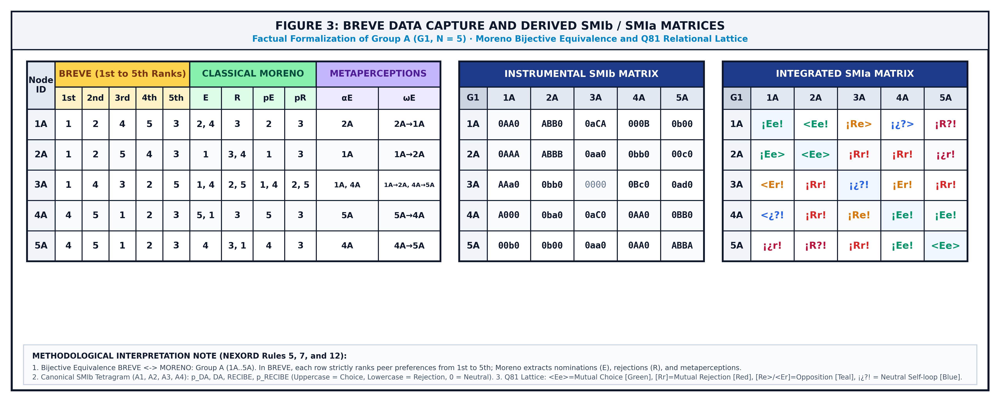
2.2. Reflexive Diagonal Closure & Core Sensors
NEXORD resolves the classical sociometric diagonal omission (traditionally empty, r_ii = empty) by requiring participants to self-anchor within the ranking (r_ii in {1, ..., N}). This reflexive closure equips the system with three analytical sensors:
- IDA (Self-Rank Misalignment Index): Angular difference between self-image (r_ii) and received peer consensus (R_ext_i):
where IDA < 0 marks status overestimation, IDA > 0 indicates self-deprecation or timidity, and IDA = 0 reflects balanced social calibration. At the collective level, group deviation is computed quadratically:
- ITA (Self-Rank Tension Index): Evaluates structural strain arising when multiple members claim rank one (r_ii = 1).
- Cognitive Partitioning P(k): By positioning oneself at rank k, the combinatorial space partitions into P(k) = (k-1)!(N-k)!, formalizing that interpersonal evaluations are projected upward or downward from an initial self-anchor:
3. Relational Dynamics: Field Regimes, Friction & Viability
3.1. Relational Friction Coefficient (Φ) and Structural Cohesion (ICE)
Collective internal resistance and misalignment are synthesized in the Relational Friction Coefficient (Φ) and its structural complement, the Structural Cohesion Index (ICE):
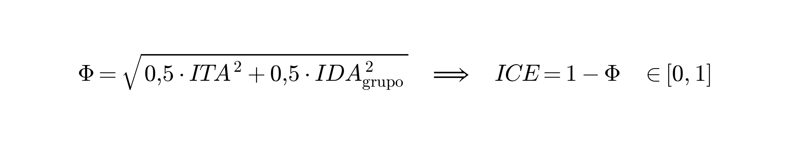
where moderate values of Φ reflect adaptive vitality, while extreme values indicate structural strain or polarization risks.
3.2. Psychologization of Field Regimes & Groupthink Prevention
Group dynamics should not be framed as inanimate physics: collective states reflect psychosocial regimes of interpersonal articulation:
- Regime of Structural Rigidity and Inertia: Characterized by frozen hierarchies, static roles, and reduced communication permeability.
- Regime of Fluidity and Adaptive Cohesion: Characterized by open relational homeostasis, where preferences and constructive feedback circulate flexibly.
- Regime of Dispersion and Anomie: Characterized by low coupling density, disengagement, and weak collective grounding.
- Regime of Effervescence and Collective Fusion: Characterized by shared emotional activation and intense interactive mobilization.
Within this framework, NEXORD questions the assumption that optimal functioning equals absolute cohesion (ICE = 1.0, Φ = 0). A collective devoid of friction represents a vulnerable system prone to Groupthink (Janis, 1972), where consensus pressures suppress divergent perspectives. Moderate friction and transactional gradients supply the necessary impetus for organizational learning and adaptive plasticity.
3.3. The Living Puzzle: Unjamming vs. Dignified Ecosystemic Relocation
Unlike models addressing friction through punitive exclusion or individual blaming, NEXORD views the collective as a living puzzle. An actor experiencing relational tension is not inherently deficient: they often encounter structural role misalignments or flow asymmetries within their local network. Diagnostic intervention prioritizes non-punitive unjamming through local role recalibration, task restructuring, and communicative facilitation. When structural divergence proves persistent despite mediation, the framework acknowledges dignified ecosystemic relocation as a constructive option, safeguarding individual wellbeing and preventing chronic ostracism.
4. Tensorial Algebra, Q81 Lattice & Densities Pentagram
4.1. The Dyadic Tetragram & Dual Notation
Each cell (i, j) integrates four atomic moments: D1 = pDA (emitted expectation), D2 = DA (emitted choice), D3 = REC (received choice), and D4 = pREC (received expectation).
| Position / Dimension | Psychosocial Moment / Construct | Positive (+) [SMIb: A-Z] | Neutral (0) [SMIb: 0] | Negative (-) [SMIb: a-z] |
|---|---|---|---|---|
| D_1 | pDA (Emitted expectation) | < (expects choice) | ¡ (expects neutrality) | [ (expects rejection) |
| D_2 | DA (Emitted choice) | E (choice) | ¿ (indifference) | R (rejection) |
| D_3 | REC (Received choice) | e (received choice) | ? (received indifference) | r (received rejection) |
| D_4 | pREC (Attributed expectation) | > (attributes choice) | ! (attributes neutrality) | ] (attributes rejection) |
The lattice contains the 81 exhaustive relational configurations (Q81 = 3^4), highlighting mutual choice (

4.2. The 10-Density Pentagram: Macro-Dimensions DA (Sender) and RECIBE (Receiver)
The ten continuous relational densities are structured within the Densities Pentagram, organized into two complementary macro-dimensions:
- Macro-Dimension DA (Sender Block): Encompasses outbound kinetic mass to effective choice: BDA (kinetic mass) -> SDA (net potential) -> A1 (pDA) -> A2 (DA).
- Macro-Dimension RECIBE (Receiver Block): Encompasses inbound effective choice to received kinetic mass: A3 (RECIBE) -> A4 (pRECIBE) -> SRC (net potential) -> BRC (kinetic mass).
- Relational System Closure: The collective system couples through Net Relational Potential (SDR = SDA + SRC) and Total Kinetic Mass (BDR = BDA + BRC), assessing positional asymmetry via Dif-DR = SDA - SRC.
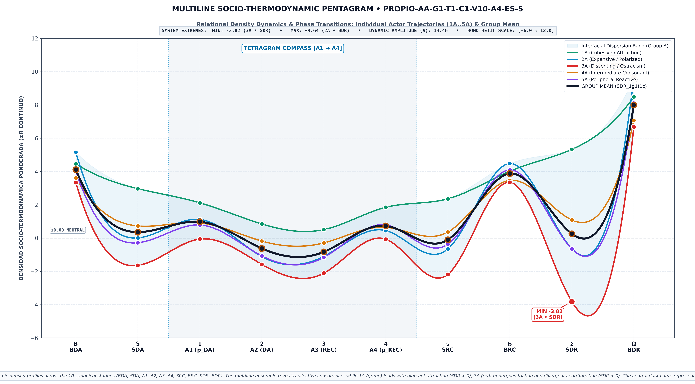
Figure 2: Socio-Thermodynamic Pentagram of Relational Densities (10D). Continuous mapping across the 10 invariant stations (BDA → BDR), visualizing the dyadic tetragram compass [A1 → A4], dynamic polarization amplitude (Δ), and the socio-thermodynamic phase transition curve.
5. Graphical Solutions, GxTyCz Multidimensional Design Space, and Invariant Geometry
5.1. Graphical Solutions and Parallel Dual Planes (AFC ∥ PCA)
NEXORD deploys versatile graphical solutions to represent the continuous relational field with clarity and without information overload:
- Three-Dimensional Continuous Sociograms: Spatial rendering of attraction basins (neon green,
), opposition regions (orange), and friction zones (magenta, [Rr]), equipped with longitudinal temporal controls. - Dual Factorial Space (AFC ∥ PCA):
* Correspondence Analysis (AFC): Operates on relative contingency matrices via Chi-square ($\chi^2$) metrics, ideal for categorical frequency profiles and sender/receiver polarization.
* Principal Component Analysis (PCA): Operates on continuous density metrics and the inverse rank law ($W = \pm 1/r$), preserving inertial mass and avoiding discrete ties.
* Commutable Dual Planes: Disentangles observations into the Senders/Givers plane (who selects), the Receivers plane (who is selected), or the unified Factorial Biplot (F1 × F2). Factor 1 (horizontal) summarizes Affective Polarization (
- 1D Slender Vertical Axes: Vertical projections ranking nodes by structural weight, flanked by external diagnostic tables for absolute contribution (CTA), representation quality (COR), and cumulative variance (CTR).
- Intergroup Structurograms: Relational support polygons supporting comparative morphological diagnostics across teams.
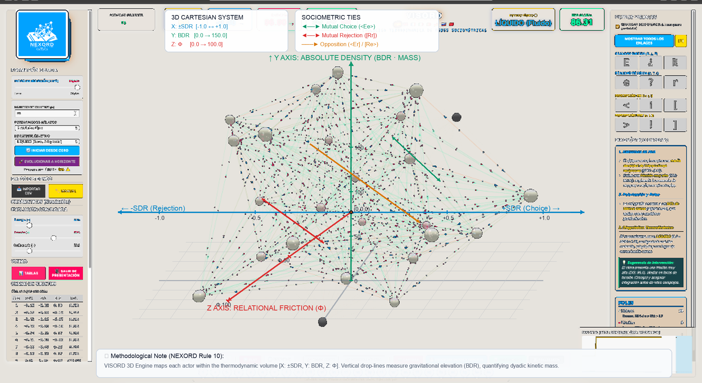
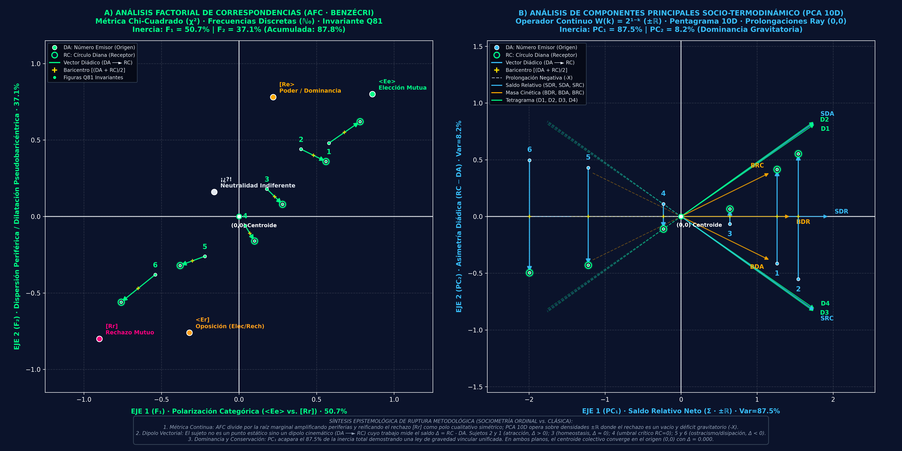
Figure 4: MESO Factorial Biplot (F1 × F2) in Parallel Dual Space (Benzécri AFC ∥ 10D Socio-Thermodynamic PCA). Left Panel: AFC on discrete contingency ℕ₀ and Q81 invariant lattice. Right Panel: Continuous 10D PCA (±ℝ) with the Densities Pentagram, positive vectors in +X and dashed projective ray extensions to -X passing through the origin (0,0). Both spaces project actors as dyadic vectorial dipoles [DA ──► RC] with central barycenters (+), revealing the attraction basin (2 & 1), the homeostatic bisectrix (3 & 4), and the ostracism/entropic dissipation basin (6 & 5).
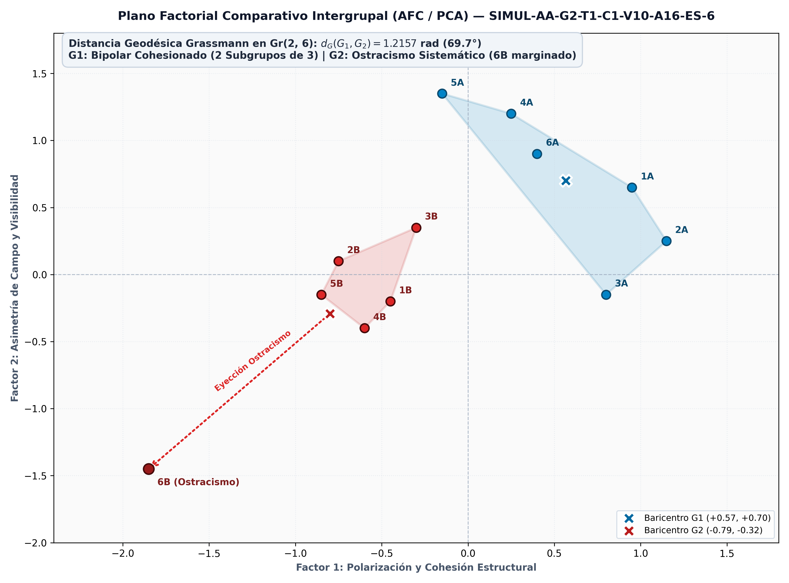
Figure 5: Intergroup Comparative Factorial Plane (AFC / PCA). Polarization force vectors and polygonal relational support structurograms between two independent collectives.
5.1.1. Paradigm Shift: From Categorical Contingency (Moreno / Benzécri) to the Socio-Thermodynamic Continuum (10D PCA)
The parallel articulation of Correspondence Analysis (AFC) and 10D Socio-Thermodynamic Principal Component Analysis (10D PCA) analytically formalizes the profound paradigm shift that Computational Ordinal Sociometry introduces beyond Moreno's classical sociometry (1934) and Benzécri's contingency approach (1973):
- 1. Ontological Metric Nature: Categorical Discretization ($\mathbb{N}_0$) vs. Continuous Energy Continuum ($\pm\mathbb{R}$):
Classical Sociometry (Moreno, 1934; Benzécri, 1973):* Operates on contingency tables constructed from discrete frequency tallies ($\mathbb{N}_0$) constrained by fixed quotas (typically 3 choices and 3 rejections). The Chi-square metric ($\chi^2$) divides observed counts by the square root of marginal mass products ($\sqrt{r_i \cdot c_j}$), artificially inflating peripheral low frequencies and dispersing factor inertia across multiple orthogonal dimensions ($F_1 \approx 50.7\%, F_2 \approx 37.1\%$). Most critically, AFC reifies mutual rejection $[Rr]$ as a substantive, autonomous qualitative pole symmetric to choice.
NEXORD Socio-Thermodynamics (2026):* The continuous exponential rank decay operator $W(k) = 2^{1-k}$ ($1\text{st}=1.000, 2\text{nd}=0.500, 3\text{rd}=0.250\dots$) applied over tie-free forced drag-and-drop administration transforms ordinal rankings into continuous signed densities ($\pm\mathbb{R}$). Within 10D PCA space (orthogonally decomposed via SVD on the centered Pentagram matrix), all 10 canonical density variables ($SDR, BDR, SDA, SRC, BDA, BRC, D_1..D_4$) converge into the positive half-plane ($+X$). Mutual rejection $[Rr]$, conflict, and exclusion are no longer an autonomous qualitative pole, but an energy deficit, gravitational void, and loss of relational mass, mapped onto the negative projective ray extensions ($-X$) passing through the barycentric origin $(0,0)$.
- 2. From Static Scalar Node to Dynamic Dyadic Dipole ($DA \longrightarrow RC$):
* In classical sociograms, the individual is depicted as a static scalar dot devoid of mass or physical work, or as a passive centroid in factorial space.
* In NEXORD, the relational actor is ontologically modeled as a kinematic vectorial dipole in continuous tension: their active outbound investment ($DA / SDA$) and inbound collective reception ($RC / SRC$) are projected simultaneously. The directed vector arrow $DA \longrightarrow RC$ quantifies socio-thermodynamic work and positional asymmetry:
$$\Delta_i = RC_i - DA_i$$
* The actor's intrinsic barycenter ($+$) sits with mathematical exactitude at the vector midpoint $[(DA + RC)/2]$, preserving individual systemic identity without static collapse.
- 3. The Three Topological Field Basins:
Gravitational Attraction Basin (Leaders 2 & 1):* Upward vectors with strongly positive balances ($\Delta > 0$). The group invests massive gravitational mass in them without requiring sender hyper-effort ($RC \gg DA$). They function as gravitational potential wells that structure, polarize, and hold the collective network together at zero entropic cost.
Homeostatic Bisectrix & Critical Freezing Threshold (Intermediate Actors 3 & 4):* Subject 3 sits precisely on the homeostatic bisectrix ($RC = DA, \Delta \approx 0$), acting as a thermal damper and balancing mediator that buffers systemic fluctuations. Subject 4 marks the critical threshold of relational freezing: receiving zero positive impact ($RC = 0$), yet sustaining the group through emitted effort ($DA > 0$), accumulating severe strain ($\Delta < 0$).
Ostracism & Entropic Dissipation Basin (Peripheral Actors 6 & 5):* Collapsed, downward-plunging vectors with heavily negative balances ($\Delta < 0$). Positioned entirely within the negative projective half-plane ($-X$), diametrically opposite to all density vectors ($SDR, SRC, BDR\dots$). They act as entropic dissipation sinks absorbing collective frictions and tensions, exposing structural exclusion invisible to classical sociometric tallies.
- 4. Inertial Dominance of the Gravitational Gradient ($PC_1 \gg PC_2$):
* In sharp contrast to AFC inertia dispersion, in socio-thermodynamic PCA the first principal component ($PC_1$) accounts for over $87.5\%$ of total inertia (and up to $90\%$ across longitudinal field corpora).
* This analytical result demonstrates that human collectives follow a unified law of socio-affective gravity: the relational field is not fragmented into disjointed axes, but organized along a primary dipolar gradient separating concentrated relational density ($+X$) from dissipative relational voids ($-X$).
- 5. The Barycentric Conservation Theorem:
* In any closed human collective, the fundamental conservation law holds analytically and empirically:
$$\sum_{i=1}^N DA_i \equiv \sum_{j=1}^N RC_j$$
* Consequently, the collective mass centroid converges with floating-point precision ($\Delta_{\text{centroid}} = 0.000$, machine epsilon $\approx 2.22 \times 10^{-16}$) exactly at the Cartesian origin $(0,0)$. All relational energy received by an actor ($RC$) is strictly conserved from outbound peer investments ($DA$): no relational mass is created or destroyed; it is merely redistributed across the dyadic field tensor.
5.2. The GxTyCz Multidimensional Design Space without a Priori Constraints
The mathematical formulation of NEXORD imposes no a priori limitations or restrictions on research and diagnostic designs:
- Groups (G): Accommodates any number of independent collectives, organizational departments, working teams, or experimental cohorts.
- Temporal Waves (T): Enables continuous longitudinal tracking across T timepoints (T1, T2, ..., Tn), monitoring the diachronic evolution of cohesion and latent structural rifts.
- Multiplex Criteria (C): Models multiple functional and affective criteria simultaneously (C1 task competence, C2 social bonding, C3 crisis leadership), capturing topological shifts across evaluative lenses.
- Contextual Variables (Z): Seamlessly integrates demographic profile attributes (age, gender, tenure) and group activity scales (AAG; Vicente, Cornejo & Barbero, 2006).
5.3. Multigroup PCA & Geodesic Distance on Grassmann Manifolds Gr(k, N)
To compare formally independent collectives without enforcing artificial cross-group links, each group is modeled as a k-dimensional subspace in R^N. From canonical Jordan angles cos(theta_m) = sigma_m(U_1^T U_2), scale-invariant geodesic distance is calculated:
This metric quantitatively determines whether two collectives share structural morphology regardless of sample size differences.
6. Experimental Research: Physical Lab, Processual Sociometry, and Multimodal Diagnostics
6.1. Monitoring Experimental Designs in the Physical Laboratory
The platform supports the systematic monitoring of face-to-face experimental designs within physical social psychology laboratories. In controlled observation rooms, working seminars, and team behavioral laboratories, NEXORD captures interpersonal dynamics in real time, tracking the emergence of informal leadership structures, reciprocity, and network centrality during collaborative tasks.
6.2. Processual Sociometry and Social Dilemma Resolution
Moving beyond static cross-sectional sociometry, Processual Sociometry records continuous communicative sequences. By delineating an interaction space and tracking interaction counters (speaking turns, intervention frequency, listening ratios), the platform models social dilemma resolution. It quantifies behaviors of cooperation, caution, skepticism, and free-riding (polizón), enabling experimental studies on trust building and social capital formation under strict anonymization.
6.3. Multimodal Perception: The Iceberg Model & Hydrodynamic Sonification
In all human groups, a visible surface layer (formal roles, explicit agreements, observable behavior) is sustained by a deep, submerged relational foundation (unspoken expectations, latent tensions, unvoiced affinities, and subtle rejections). The fundamental methodological objective of the platform is to render visible and audible the dynamics and processes of group interaction:
- Visual Dimension: Articulated through continuous graphical solutions and 3D sociograms.
- Auditory Dimension (Hydrodynamic Sonification): Translates friction gradients (Φ), net potential (SDR), and flow asymmetries into harmonic acoustic frequencies (calibrated at 432 Hz with distinct timbral textures). This auditory mapping allows researchers to listen to relational tension or harmony, providing a complementary perceptual modality for detecting dynamics submerged beneath the visible surface.
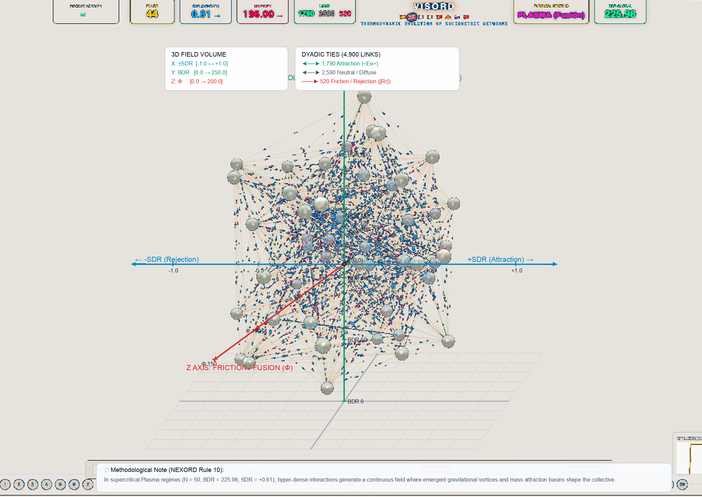
6.4. The CULTURAL Corpus as a Zero-Reactivity Laboratory
Through the CULTURAL data category, NEXORD transcribes dramatic, cinematic, and narrative masterpieces into ordinal sociomatrices. Serving as complete and finalized relational records, literary corpora enable the forensic analysis of extreme dynamics (such as polarization or authoritarianism in works by Lorca, Sartre, or Rose) within an experimental framework with zero evaluation reactivity.
7. Institutional Governance, Ethics by Design, and Open Science
7.1. Ethics by Design & Non-Punitive Interdiction
The platform embeds ethical safeguards directly into technical algorithms (Ethics by Design). The system explicitly prohibits punitive deployments, negative selection, or elimination rankings. Analysis on empirical field datasets (REAL category) requires authentication and formal accountability by an accredited Principal Investigator (PI).
7.2. Open Science, Clélie Protocol & Institutional Custodianship (BSOC)
In accordance with Open Science and FAIR Data principles, NEXORD's mathematical, methodological, and computational formulations are publicly accessible. The complete interactive web platform, computational engines, and 3D VISORD visualizers are openly accessible at the official web portal: https://josemancor.github.io/nex-ord-web/. To protect participant confidentiality, empirical field datasets undergo canonical anonymization (1A1a..5A1a) and cryptographic hash sealing (SHA3-512, Clélie Protocol), under the academic custodianship of the Sociometric Data Bank (BSOC / University of Barcelona).
7.3. Participant Rights & Constructive Feedback
Participants receive individual codes to audit data processing fidelity without accessing peer records. Node re-identification is strictly restricted to the responsible PI within guidance or supportive group mediation. All feedback is constructive, non-stigmatizing, and dedicated to promoting collective health.
8. Canonical Technical Annexes
8.1. Annex I: Dual Matrices (SMIb/SMIa), Master 9x9 Lattice of Q81, and I255 Catalog
- SMIb Matrix: Stores the numerical tetragram (A1 · A2 · A3 · A4) = (pDA · DA · RECIBE · pRECIBE) in each cell (i, j).
- SMIa Matrix: Condenses the tetragram into the 81 dyadic configurations (1 = [Rr], 41 = ¡¿?!, 81 =
). - Boolean Indicator Catalog I255: Disjunctive partitioning of dyadic space along the diagonal of perceptual consonance.
8.2. Annex II: Factorial Quality Metrics (COR, CTA, CTR), Vertical Slender Axes, and 2D(6) Projection
- Factorial Metrics (Cornejo, 1988):
* COR measures representation quality of node i on factor alpha.
* CTA expresses the percentage of factor inertia explained by element i.
* CTR reflects global cumulative explained variance.
- Vertical Factorial Axes: Slender vertical axes rank nodes by structural weight, preventing visual crowding in saturated 2D scatter plots.
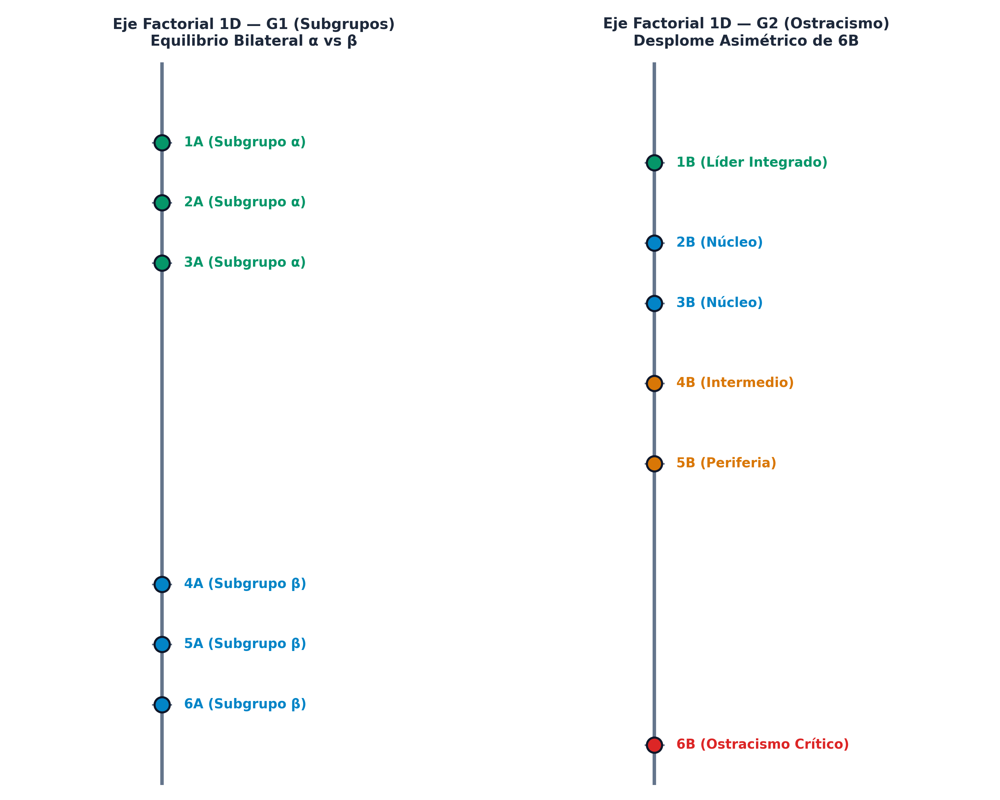
8.3. Annex III: Catalog of the 10 Ecosystemic Domains
NEXORD calibrates Relational Inertia (alpha) and Relational Decay (gamma) across 10 normative institutional domains:
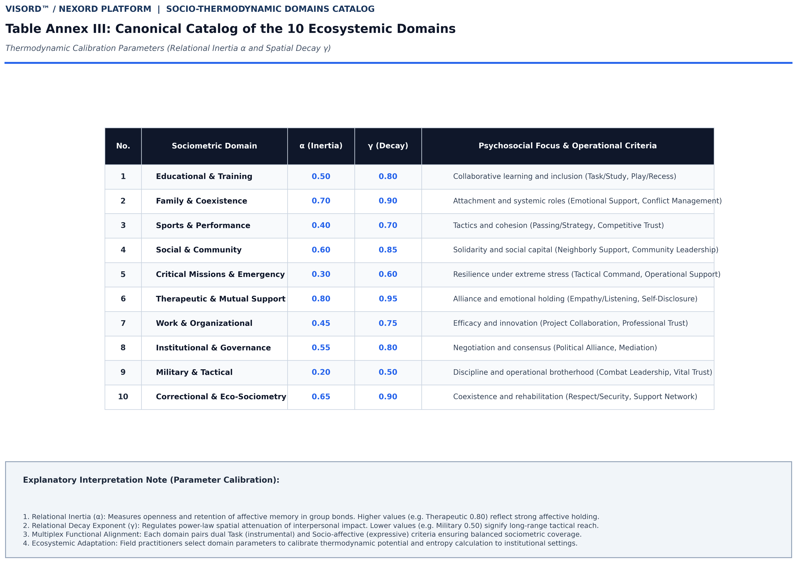
8.4. Annex IV: Sender - Receiver Rank Interdistances and Isometry Diagonal
Euclidean distances for sender emission (d_DA) and receiver reception (d_RC) preserving strict sender ordering:
- Isometry Diagonal (d_DA = d_RC): Evaluates relational symmetry and verifies the Relational Asymmetry Principle (reception dispersion systematically exceeds emission dispersion).
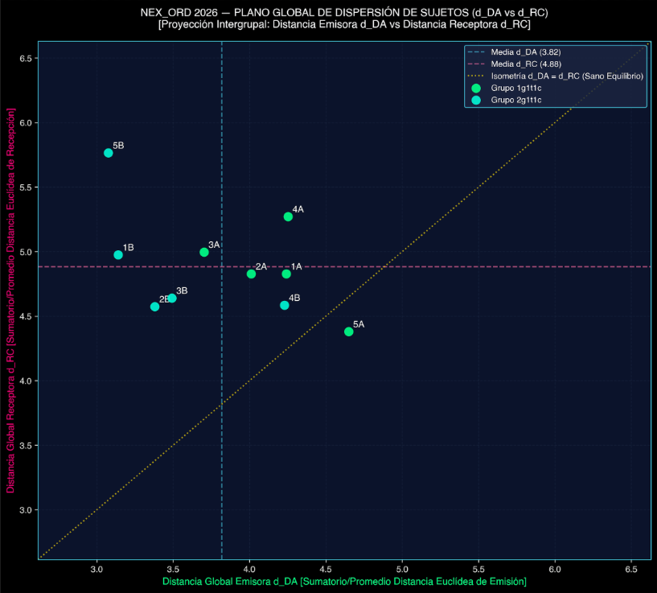
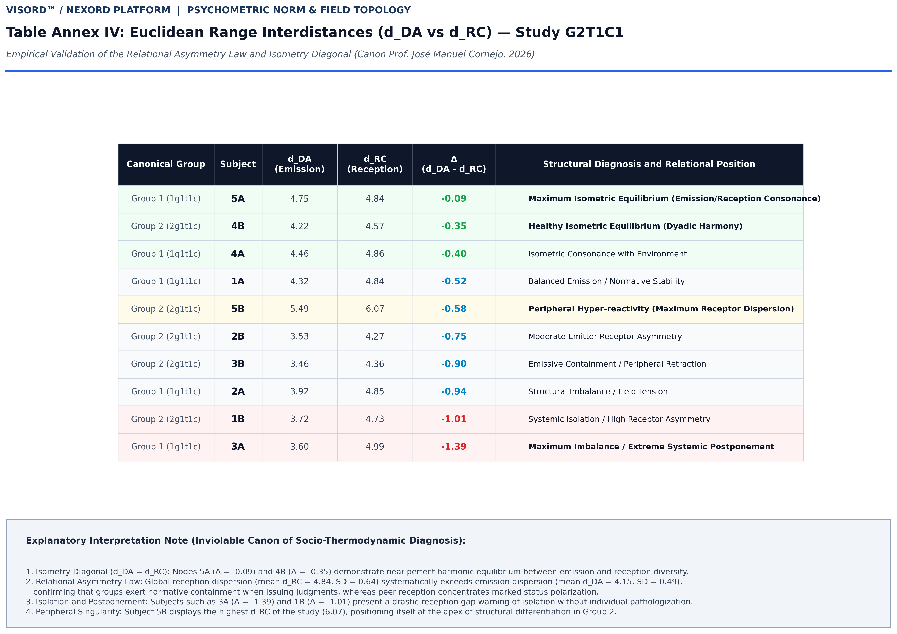
9. Canonical References
- Absil, P.-A., Mahony, R., & Sepulchre, R. (2008). Optimization algorithms on matrix manifolds. Princeton University Press.
- Aref, S., & Wilson, M. C. (2021). The frustration index is a key measure for analysing signed networks. Journal of Complex Networks, 7(2), cnz006. https://doi.org/10.1093/comnet/cnz006
- Avramidis, E., Strogilos, V., Aroni, K., & Kankaraki, C. T. (2017). Using sociometric techniques to assess the social impacts of inclusion. Educational Research Review, 20, 68–80.
- Bales, R. F. (1950). Interaction process analysis: A method for the study of small groups. Addison-Wesley.
- Benzécri, J.-P. (1973). L'Analyse des Données: T. 2, L'Analyse des Correspondances. Dunod.
- Borsboom, D., et al. (2021). Network analysis of multivariate data in psychological science. Nature Reviews Methods Primers, 1(1), 58.
- Cornejo, J. M. (1988). Técnicas de investigación social: El análisis de correspondencias. PPU.
- Cornejo, J. M. (2026). Computational Ordinal Sociometry (NEXORD): An Algorithmic, Matrix, and 4D Socio-Thermodynamic Framework. Zenodo. https://doi.org/10.5281/zenodo.18926396
- Cucuringu, M., Mantzaris, A. V., & Roberts, J. (2023). The Bradley-Terry stochastic block model for directed ranking networks. Journal of Complex Networks, 11(4), cnad025. https://doi.org/10.1093/comnet/cnad025
- Diaz-Diaz, F., & Estrada, E. (2025). Signed graphs in data sciences via communicability geometry. Information Sciences, 680, 121110. https://doi.org/10.1016/j.ins.2024.121110
- Festinger, L. (1950). Informal social communication. Psychological Review, 57(5), 271–282.
- Heider, F. (1958). The psychology of interpersonal relations. John Wiley & Sons.
- Janis, I. L. (1972). Victims of Groupthink: A psychological study of foreign-policy decisions and fiascoes. Houghton Mifflin.
- Kenny, D. A., & Garcia, R. L. (2012). Using the Actor–Partner Interdependence Model to study the effects of group composition. Small Group Research, 43(4), 468–496.
- Krivitsky, P. N., & Butts, C. T. (2017). Exponential-family random graph models for rank-order relational data. Sociological Methodology, 47(1), 68–112. https://doi.org/10.1111/socm.12038
- Lewin, K. (1951). Field theory in social science: Selected theoretical papers. Harper & Row.
- Morales Domínguez, J. F., & Cornejo Álvarez, J. M. (2026). Sociometría Ordinal Computacional. La Plataforma NEXORD: Hacia una Física de lo Grupal. Psicothema (in review).
- Moreno, J. L. (1934). Who shall survive? A new approach to the problem of human interrelations. Nervous and Mental Disease Publishing Co.
- Nicolis, G., & Prigogine, I. (1977). Self-organization in nonequilibrium systems: From dissipative structures to order through fluctuations. John Wiley & Sons.
- Scudéry, M. de (1654). Clélie, histoire romaine. Augustin Courbé.
- Terry, R. (2000). Recent advances in measurement theory and the use of sociometric techniques. In A. H. N. Cillessen & W. M. Bukowski (Eds.), Recent advances in the measurement of acceptance and rejection in the peer system (pp. 27–48). Jossey-Bass. https://doi.org/10.1002/cd.23220008804
- Tsankova, E., & Tair, E. (2021). Meta-accuracy in sociometric status perceptions. Frontiers in Psychology, 12, 642398.
- Vicente, R., Cornejo, J. M., & Barbero, F. (2006). Análisis de la Actividad Grupal (AAG). Psicothema, 18(3), 445–452.
- Ye, K., & Lim, L.-H. (2016). Schubert varieties and distances on Grassmann manifolds. SIAM Journal on Matrix Analysis and Applications, 37(3), 1176–1197.
(C) 2026 Dr. José Manuel Cornejo Álvarez / NEXORD Platform (VISORD) / Sociometric Data Bank BSOC / University of Barcelona.
Published under Creative Commons Attribution-NonCommercial-NoDerivatives 4.0 International License (CC BY-NC-ND 4.0).